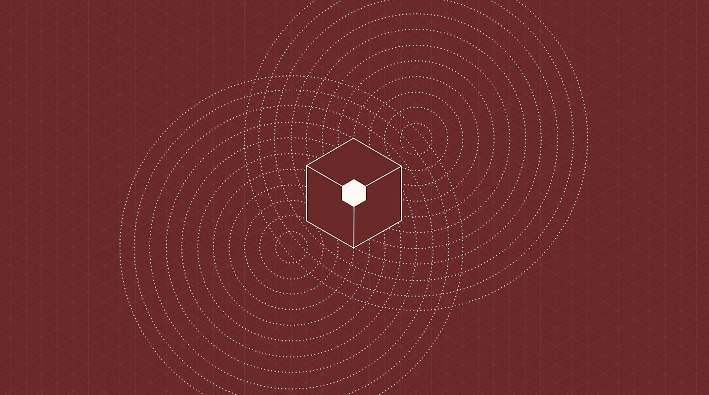

O Quantum no universo da computação
A computação quântica representa um campo interdisciplinar que abrange aspectos da ciência da computação, física e matemática. Esse domínio utiliza os princípios da mecânica quântica para abordar desafios complexos de maneira mais eficiente do que os computadores convencionais. A pesquisa e desenvolvimento em computação quântica abrangem tanto o hardware quanto a criação de aplicações específicas. Os computadores quânticos demonstram a capacidade de resolver certos tipos de problemas de forma mais rápida, aproveitando fenômenos quânticos como superposição e interferência. Setores como aprendizado de máquina (ML), otimização e simulação de sistemas físicos podem se beneficiar significativamente dessa velocidade aprimorada. Exemplos de aplicação incluem a otimização de portfólios financeiros e a simulação de sistemas químicos, desafios que atualmente supercomputadores de última geração não conseguem enfrentar. Bem-vindo à vanguarda da tecnologia e inovação. Embarque conosco numa jornada pela computação quântica, um reino onde as leis da física clássica cedem lugar a possibilidades extraordinárias. Este é o ponto de encontro para mentes curiosas e visionárias que buscam compreender e moldar o futuro da computação.
Propósito:
Nosso propósito é desmistificar a complexidade da computação quântica, proporcionando uma experiência educativa que transcende barreiras. Seja você um iniciante intrigado ou um especialista, nosso site oferece recursos criteriosamente elaborados para explorar e compreender os aspectos dessa revolução tecnológica. A aventura apenas começou! Não perca a oportunidade de aprofundar seus conhecimentos sobre a computação quântica.
Sobre a computação quântica
O que é a computação quântica:
Computação quântica é um campo de pesquisa que combina elementos da ciência da computação, física quântica e matemática avançada. Esse campo promissor tem o potencial de superar as limitações dos computadores tradicionais, usando os princípios da mecânica quântica para resolver problemas complexos de forma muito mais eficiente. A pesquisa em computação quântica abrange tanto a parte de hardware quanto o desenvolvimento de novas aplicações. O coração dessa revolução são os computadores quânticos, capazes de resolver certos tipos de problemas com uma velocidade impressionante, aproveitando conceitos como superposição e interferência quântica.
A eficácia dos computadores quânticos está na exploração desses fenômenos para realizar operações simultâneas, acelerando significativamente em comparação com os métodos tradicionais. Isso tem aplicações importantes em áreas como machine learning, otimização e simulação de sistemas físicos. Na área de machine learning, por exemplo, os algoritmos quânticos podem processar grandes volumes de dados simultaneamente, proporcionando uma vantagem significativa. Problemas complexos de otimização, como maximizar ou minimizar funções em domínios extensos, também podem ser abordados muito mais rapidamente com algoritmos quânticos.
Além disso, os computadores quânticos são notáveis na simulação de sistemas físicos complexos, como os encontrados em finanças e química. A otimização de portfólios financeiros, por exemplo, pode ser feita de maneira mais eficiente, considerando variáveis complexas simultaneamente. A simulação de sistemas químicos, que era anteriormente desafiadora para os supercomputadores mais poderosos, torna-se possível com a computação quântica, permitindo uma compreensão mais profunda e precisa de fenômenos moleculares e reações químicas. Em resumo, a computação quântica não apenas redefine o desempenho computacional, mas também abre novas oportunidades em diversas disciplinas científicas, inaugurando uma era de inovação e descoberta impulsionada pela exploração da mecânica quântica. Explore este campo fascinante para desbravar novos horizontes na ciência.
O que é um qubit?
Um qubit é a peça fundamental de informação na computação quântica. Ele desempenha um papel parecido com o dos bits na computação normal, mas com uma diferença crucial. Enquanto os bits normais são como interruptores que podem estar ligados (1) ou desligados (0), os qubits podem existir em várias posições ao mesmo tempo, conhecido como superposição. Isso os torna especiais e poderosos na resolução de problemas de maneiras diferentes dos bits tradicionais.
O que é quantum?
Em "computação quântica", quantum se refere à forma como o sistema utiliza a mecânica quântica para realizar cálculos. Na física, quantum é a menor unidade isolada possível de qualquer característica física. Normalmente, estamos falando das propriedades das partículas muito pequenas, como elétrons, neutrinos e fótons. Esses "quantums" são como os tijolos básicos que a computação quântica usa para construir seus cálculos.
Sobreposição:
Na fenomenologia da sobreposição, partículas quânticas existem como uma combinação de todos os estados possíveis simultaneamente, flutuando entre eles até que sejam observadas e medidas. Uma analogia útil é imaginar uma moeda: enquanto os bits clássicos são como lançar a moeda e obter cara ou coroa, a sobreposição permitiria visualizar todos os estados, incluindo intermediários, simultaneamente, como se pudéssemos ver cara e coroa ao mesmo tempo.
Emaranhamento:
O emaranhamento refere-se à capacidade das partículas quânticas de correlacionar seus resultados de medição, formando um sistema único em que influenciam uns aos outros. Ao emaranhar qubits, suas medidas tornam-se interdependentes, permitindo que as informações sejam inferidas de um qubit para outro. À medida que mais qubits são emaranhados em um sistema, os computadores quânticos podem realizar cálculos exponencialmente mais complexos e resolver problemas mais desafiadores.

Entrelaçamento:
O entrelaçamento quântico, um fenômeno fundamental da mecânica quântica, refere-se à conexão instantânea entre os estados de dois qubits, independentemente da distância entre eles. Esse efeito implica que alterações no estado de um qubit têm um impacto imediato no outro. Essa propriedade é explorada em algoritmos quânticos para resolver problemas complexos, aproveitando a capacidade de realizar operações simultâneas e paralelas em estados entrelaçados, conferindo uma vantagem potencial sobre abordagens clássicas.
Interferência quântica:
A interferência quântica é um comportamento intrínseco dos qubits, resultante da sobreposição, que afeta a probabilidade do colapso em diferentes estados. Para garantir resultados precisos, os computadores quânticos são projetados para minimizar a interferência. A abordagem da Microsoft, por exemplo, utiliza qubits topológicos que são estabilizados manipulando sua estrutura e envolvendo-os com compostos químicos para protegê-los contra influências externas, assegurando resultados mais confiáveis.
Evolução dos Qubits:
Empresas e laboratórios estão continuamente ampliando o número de qubits em sistemas quânticos para realizar cálculos mais complexos. Atualmente, sistemas com dezenas de qubits são comuns, mas a presença de ruído os torna ocasionalmente pouco confiáveis. A efetiva resolução de problemas do mundo real requer sistemas com dezenas ou centenas de milhares de qubits, e a transição para uma fase em que os computadores quânticos se tornarão verdadeiramente práticos é estimada para as próximas décadas.

Tabela Comparativa: Computação Clássica X Computação Quântica
| Aspecto | Computação Clássica | Computação Quântica |
|---|---|---|
| Processamento de Dados | - Processamento sequencial. - Bits clássicos (0 ou 1). |
- Processamento simultâneo. - Qubits quânticos (0, 1 ou ambos). |
| Velocidade de Processamento | - Limitada por operações sequenciais. | - Potencial para aceleração exponencial em certos casos. |
| Tipo de Informação | - Informação clássica (bits). | - Informação quântica (qubits). |
| Superposição | - Não aproveita superposição. | - Aproveita superposição para processamento paralelo. |
| Interferência Quântica | - Não se aplica. | - Aproveita interferência quântica para otimização. |
| Estabilidade | - Estados estáveis e previsíveis. | - Suscetível a decoerência e ruído quântico. |
| Algoritmos Clássicos | - Algoritmos tradicionais. | - Algoritmos quânticos inovadores para certos problemas. |
| Aplicações Práticas Atuais | - Amplamente estabelecidas em várias indústrias. | - Em fase inicial, com foco em problemas específicos. |
| Segurança na Criptografia | - Criptografia baseada em fatores de dificuldade. | - Oferece potencial para criptografia quântica mais segura. |
| Desenvolvimento Tecnológico | - Tecnologia consolidada e madura. | - Desafios significativos em hardware e estabilidade. |
Como ingressar na área de computação quântica:
Fundamentos de Computação Quântica:
Comece estudando os fundamentos da computação quântica, incluindo princípios quânticos e computação quântica. Livros como "Quantum Computation and Quantum Information" de Michael Nielsen e Isaac Chuang são excelentes recursos.
Cursos Online:
Plataformas como Coursera, edX e Udacity oferecem cursos de introdução à computação quântica. O curso "Quantum Machine Learning" no Coursera, ministrado por Peter Wittek, é um exemplo.
Programação Quântica:
Aprenda a programar em linguagens quânticas como Qiskit (para IBM Quantum) ou Cirq (para Google's Quantum Computing). Ambas as plataformas têm documentação abrangente e tutoriais.
Laboratórios Quânticos Online:
Experimente laboratórios quânticos online para ganhar experiência prática. IBM Quantum Experience e Google Quantum Playground são boas opções.
Comunidades e Fóruns:
Participe de comunidades online para interagir com entusiastas e profissionais na área. O Quantum Computing Stack Exchange é um fórum valioso que oferece insights e discussões colaborativas, enriquecendo sua experiência de aprendizado em computação quântica. Juntar-se a essas plataformas aprimora seu conhecimento e possibilita interações significativas com especialistas na área.
Eventos e Conferências:
- Google Scholar: O Google Scholar é uma excelente ferramenta para procurar artigos acadêmicos e conferências na área de computação quântica. Você pode encontrar informações sobre eventos futuros e passados.
- IEEE Xplore: A biblioteca digital do IEEE (Institute of Electrical and Electronics Engineers) contém uma variedade de recursos, incluindo conferências e eventos na área de computação quântica.
- ACM Digital Library: A ACM (Association for Computing Machinery) Digital Library é outra fonte valiosa para encontrar informações sobre conferências, workshops e eventos relacionados à computação quântica.
Eventos Online Plataformas:
Plataformas dedicadas a eventos online, como Eventbrite, Meetup e Eventful, muitas vezes listam conferências e encontros na área de computação quântica. Elas facilitam a divulgação e participação em eventos dedicados a essa tecnologia inovadora, proporcionando uma experiência acessível e conveniente para a comunidade interessada.
Sites de Organizações Quânticas:
Verifique os sites de organizações dedicadas à computação quântica, como o Quantum Industry Consortium, para obter informações sobre eventos e conferências. Essas plataformas fornecem uma visão abrangente das oportunidades de networking e aprendizado, conectando os interessados com os eventos mais relevantes e as últimas tendências em computação quântica.
Redes Sociais Acadêmicas:
Plataformas como ResearchGate e Academia.edu podem ser usadas para seguir pesquisadores e ficar atualizado sobre eventos que estão participando e organizando.Essas redes acadêmicas oferecem uma maneira eficaz de estar atualizado com as últimas pesquisas e oportunidades de networking nesse campo em constante evolução.
Redes Sociais Profissionais:
Participe de grupos relacionados à computação quântica no LinkedIn, onde as informações sobre eventos acadêmicos são frequentemente compartilhadas. Essa plataforma profissional oferece uma oportunidade valiosa para se conectar com profissionais e pesquisadores na área, ficando por dentro das últimas novidades e oportunidades de eventos relevantes para a computação quântica.
Revistas Científicas e Revistas Especializadas:
Revistas como a "Quantum Science and Technology e "Physical Review X"" muitas vezes destacam eventos e conferências na área de computação quântica. Acompanhar essas publicações é uma maneira eficaz de ficar informado sobre os últimos desenvolvimentos, descobertas e oportunidades de participação.
Blogs e Artigos Científicos:
O arXiv é um repositório de artigos científicos onde você pode encontrar trabalhos recentes em computação quântica. Ao explorar esse recurso, é possível manter-se atualizado sobre as últimas pesquisas e descobertas nesse campo dinâmico, proporcionando uma fonte valiosa de informações para profissionais e entusiastas da área.
Cursos Universitários Online:
- MIT (Massachusetts Institute of Technology): O MIT é conhecido por sua excelência em ciência da computação e engenharia, e oferece cursos e pesquisas na área de computação quântica.
- Universidade de Waterloo: A Universidade de Waterloo, no Canadá, é reconhecida por seu Instituto Perimeter de Física Teórica, que se concentra em pesquisa em física quântica e computação quântica.
- Universidade de Oxford: A Universidade de Oxford, no Reino Unido, oferece cursos e programas de pesquisa na área de ciência da computação quântica.
- Universidade de Stanford: Stanford, nos Estados Unidos, é uma instituição líder em pesquisa em ciência da computação e oferece cursos relacionados à computação quântica.